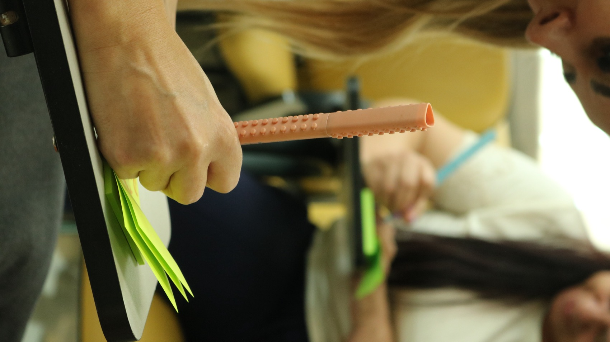
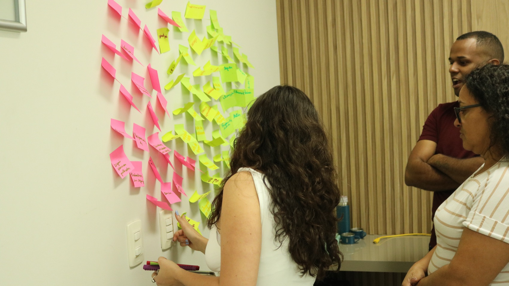
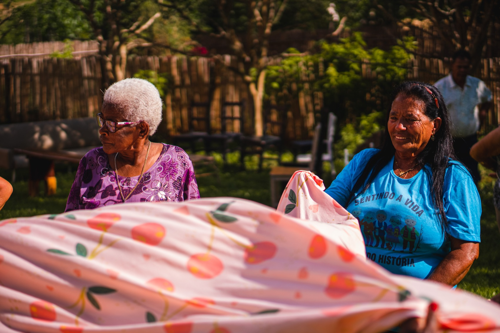
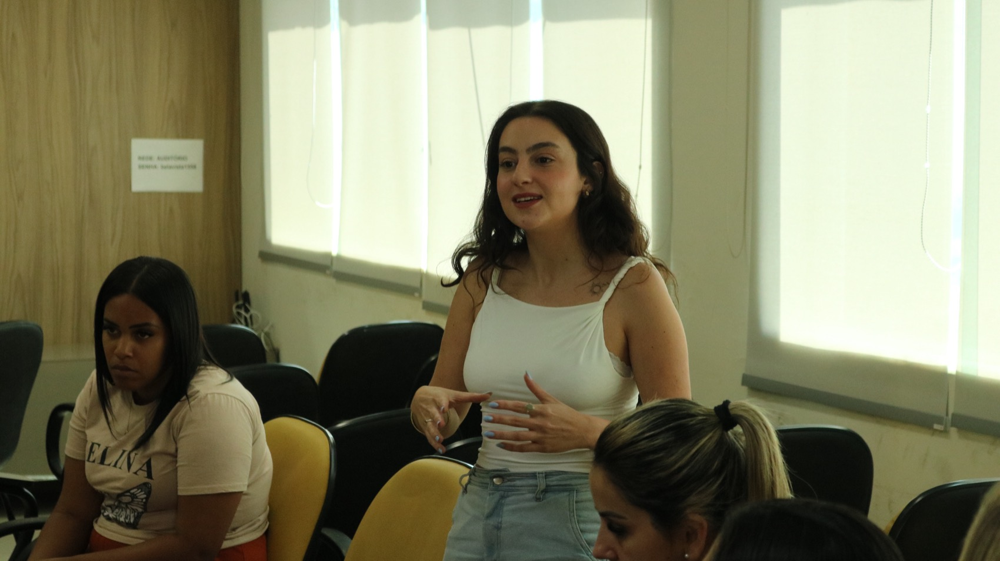
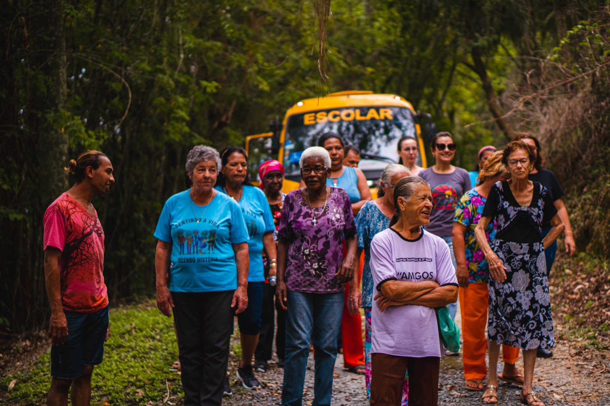

Cuidamos de quem trabalha na Rede Pública para uma Saúde Mental Coletiva.
A rede pública já é uma política de cuidado. A PAAPS é a rede que cuida dela por cima: formação, dispositivos de cuidado coletivo e redesenho do fluxo entre as equipes.
Uma supraestrutura de cuidado para a rede que já cuida.
Quem sustenta o sistema público vive uma crise silenciosa. Cuida dos mais vulneráveis enquanto ninguém cuida dele. As respostas de sempre não alcançam: treinamento corporativo importado e atendimento individual isolado ignoram que a ferida é coletiva e institucional.
A PAAPS constrói sistemas humanos vivos de cuidado coletivo dentro do setor público. Não chegamos com um pacote pronto: lemos a rede do município, nomeamos o que a adoece e desenhamos com as equipes os dispositivos de que aquela rede precisa.
Para cuidar em rede a gente precisa aprender a ser cuidado em rede.

Duas organizações, o mesmo compromisso.
O que entregamos é o mesmo. O que muda é o caminho para chegar até ele.
Gestão pública
Prefeituras, secretarias de saúde, assistência social e educação, consórcios e associações de municípios. Trabalhamos com quem faz a política pública acontecer na ponta: postinho, CRAS, CREAS, escola, vigilância e guarda.
Entramos pelos caminhos que a lei já prevê, sem inventar atalho: inexigibilidade, dispensa, licitação, CPSI e UST.
Levar a PAAPS para o meu município
ONGs e projetos sociais
Institutos, associações, projetos sociais e organizações que atendem população em situação de vulnerabilidade e sustentam equipes expostas à violência todos os dias.
O desgaste é o mesmo do serviço público, com menos estrutura para sustentá-lo. Desenhamos o cuidado no tamanho do projeto, do edital e da equipe que existe.
Falar sobre a minha organizaçãoFaltas e afastamentos por transtorno de saúde mental bateram recorde.
E antes de qualquer licença, o sofrimento já trava o serviço: a comunicação entre as equipes emperra, o encaminhamento se perde, o colega absorve a carga de quem faltou, e quem fica passa a trabalhar sob remédio psiquiátrico que impacta o próprio trabalho. Quem sente o resultado no fim da fila é o cidadão.
Fonte: Ministério da Previdência Social, dados de 2025 divulgados em janeiro de 2026.
Três frentes, combinadas conforme a leitura da sua rede.
Você pode contratar o projeto inteiro ou começar por uma frente só.
Formações
Formação prática, feita com estudo de caso e com o conhecimento que a equipe já tem entrando na sala. Ninguém muda a própria prática assistindo a uma palestra sobre ela.
- Fluxo, encaminhamento e matriciamento
- Comunicação e construção de equipe
- Reforma psiquiátrica e temas sanitaristas
- Violência de gênero e saúde da mulher
- Questões raciais e saúde da população negra
- Saúde da população LGBTQIAPN+
Projeto PAAPS no seu município
Um projeto desenhado para a sua rede, composto de dispositivos de cuidado. A leitura decide o que entra: se a lida com a violência diária está pesada, entra plantão; se o fluxo entre as equipes travou, entram grupos e um encontro de integração.
- Psicoterapia para servidores, presencial e online
- Grupo PAAPS: grupos terapêuticos
- Plantão Psicológico PAAPS
- Construção de equipe, de fluxos e de processos
Emergências e violências
Equipe de psicologia convocada para atuar em situação de emergência, acidente ou violência que atinge um território. Atuação em frentes de rede, com método, ao lado das equipes que já estão no chão.
- Acionamento por gestão pública ou organização
- Trabalho articulado com a rede local
- Cuidado com quem atende e com quem foi atingido
A gente conhece a rede por dentro, com nome e sigla.
Somos da Psicologia Social. Sabemos o que é atenção básica e o que muda quando o caso sobe de complexidade. Sabemos por que um encaminhamento se perde entre o postinho e o CAPS, e o que acontece com a família enquanto isso.
Usamos a psicologia social e sistêmica para alinhar esse processo entre as equipes e melhorar a comunicação entre elas. Para que o cidadão não precise sentir na pele os defeitos de uma rede que não consegue se comunicar nem efetivar o próprio fluxo.


Um ano dentro da rede inteira de uma cidade.
Em Desterro do Melo, no interior rural de Minas, um município de cerca de 3 mil habitantes com uma escola municipal, uma escola estadual e um único posto de saúde, a PAAPS construiu do zero um programa de cuidado em rede, tecido entre educação, saúde, prefeitura e agricultura familiar.
- Um ano inteiro de atuação de campo em 6 instituições
- Mais de 120 pais e cuidadores numa única dinâmica de Dia da Família
- Os 3 candidatos a prefeito assinaram juntos a Carta de Compromisso Melo 2050
- Documentado do início ao fim: diários de campo, registros e supervisão
Uma rede de profissionais, formada na metodologia da PAAPS.
Não é uma consultora sozinha com um catálogo de cursos. Montamos a equipe conforme o que a sua rede precisa, e todo mundo que entra passa pela nossa formação antes de entrar em campo.
Carreira executiva e experiência de gestão aplicada ao desafio da rede pública.
Profissionais com mestrado ou doutorado, vindos de universidades e da pesquisa.
Nosso modelo nasce de pesquisa revisada por pares, com dados verificáveis e falseáveis.
A parte burocrática já está resolvida.
A PAAPS é operada pela DIGGING, empresa ativa desde 2003, com CNPJ regular e documentação de habilitação em dia. A contratação acontece pelos caminhos que a legislação já prevê, e a gente ajuda o seu setor de compras a escolher o mais adequado.
Uma conversa de 45 minutos, sem custo.
A primeira conversa serve para entender o desenho da sua rede e onde o desgaste está concentrado. Dela sai uma leitura inicial e uma proposta de composição. Sem compromisso de contratação, e sem custo nenhum.
Agendar a conversaVamos olhar para a sua rede.
Conte onde dói. A gente responde com uma leitura inicial e com os caminhos possíveis para a sua realidade, seja prefeitura, seja projeto social.
Transformar o Cuidado no Brasil.